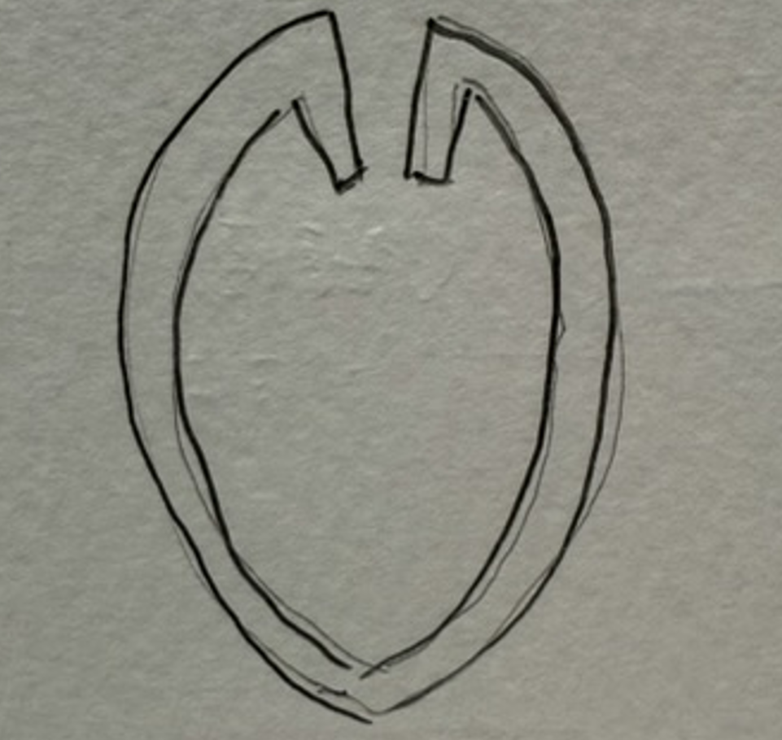
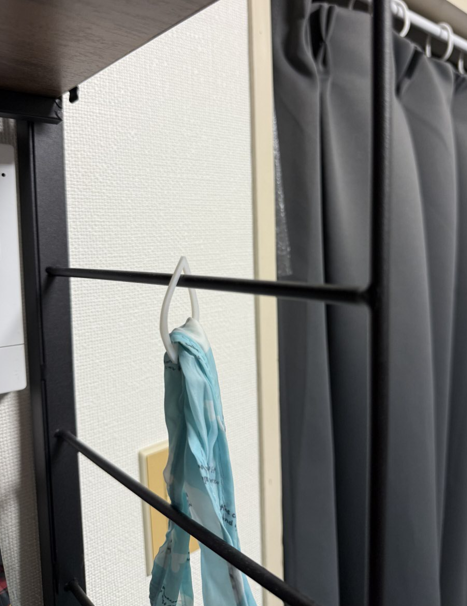

そこから右側の花びらの形をしたものをデザインした。

下の写真が完成したものである

このデザインをほかの目的にも活用できるのではないかと考えていると
ピンセットとしての機能だけでなく鞄などをひっかけるフックとしても
使えることを思いついた。

ピンセットとしての機能だけでなく鞄などをひっかけるフックとしても
使えることを思いついた。
そして、形を桜の花びらにしたことで部屋に何個もあれば桜が散っているさまを
思わせる風情ある部屋にすることができる。
思わせる風情ある部屋にすることができる。